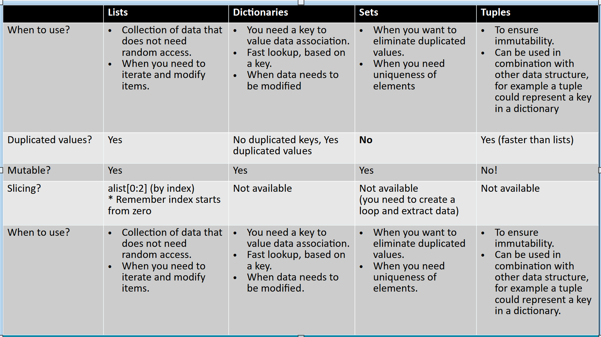
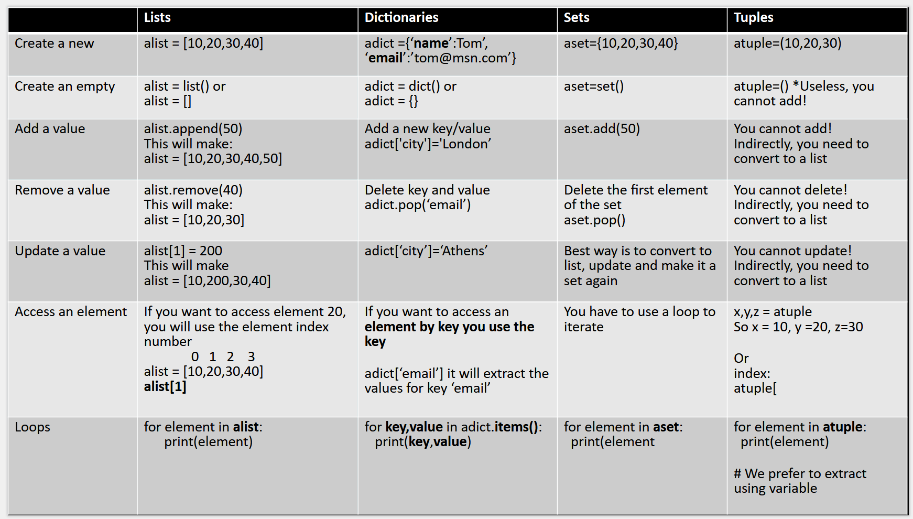

Create an empty set
Iterate over a set and print elements
Add/remove data from a set
Sets allow duplicated values
Sets are unordered
Sets are not indexed
Duplicates are eliminated
no ordering
no support for indexing
A data structure similar to lists
Main difference: tuples are immutable
Their application is faster than lists
There are two functions available only:
index to find the occurrence of a value
count to count the number of occurrences of a value
Often tuples are used as keys to dictionaries
Tuples are useful because they are
are faster than lists
protect the data from change
Since tuples are immutable we can not add new elements
tuple merge, with the + operator, can add elements and create a new tuple
Another workaround
count() method
